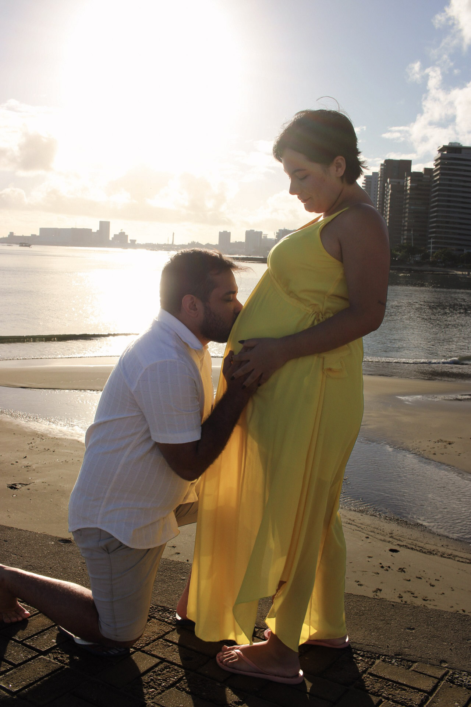
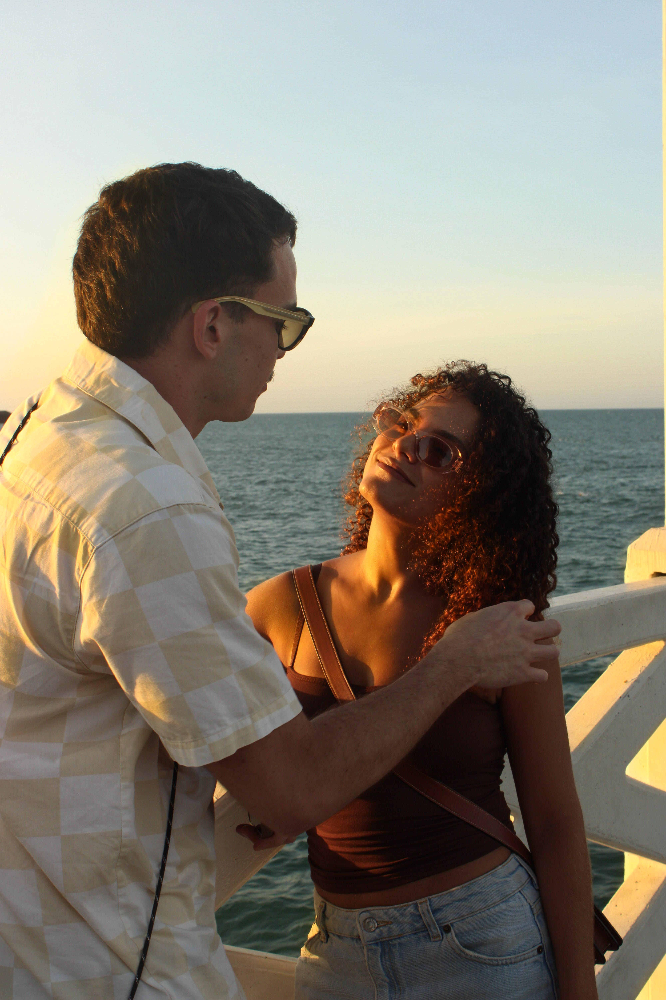

Pessoas antes das poses
Equilíbrio sutil entre direção e liberdade. Orientamos com calma, deixando a espontaneidade fluir.


Fotografia conduzida com escuta, calma e acolhimento por Carliane Carvalho — para registrar as pessoas, os laços e as histórias que fazem parte da sua vida.

“Acredito que as experiências que vivemos merecem ser reconhecidas com respeito, tempo e acolhimento.”
O Instantes de Carly nasceu do encontro entre a prática fotográfica e o meu olhar como estudante de Psicologia em Fortaleza.
As fotografias não fazem o tempo voltar e não pretendem substituir as experiências vividas. Entretanto, funcionam como pistas preciosas de memória — pequenos portais táteis para recuperar lembranças, compartilhar histórias e revisitar quem dividia a vida conosco.
Por isso, fotografo com atenção às pessoas e às relações: valorizando não apenas o resultado da imagem, mas o conforto e a tranquilidade de viver o momento diante da câmera.
Equilíbrio sutil entre direção e liberdade. Orientamos com calma, deixando a espontaneidade fluir.
A sensibilidade da Psicologia aplicada ao cuidado com a timidez, as expectativas e o ritmo de cada pessoa.
Sessões na Ponte dos Ingleses, praias, parques ou no aconchego do seu lar, banhadas pela luz dourada cearense.
Imagens com textura de álbum de família, pensadas para atravessar décadas com verdade e afeto.
Cada ensaio é uma conversa única. Filtre pelas histórias abaixo ou clique em qualquer fotografia para abrir na sala de visualização completa.
Quase ninguém chega para um ensaio totalmente relaxado. A maioria chega com timidez, dúvidas sobre o que fazer com as mãos ou aquela sensação de “eu não tenho costume de ser fotografado”.
Essas sensações fazem parte da experiência humana e são acolhidas com todo o carinho. Conduzimos cada sessão em três movimentos naturais:
Antes do primeiro clique, conversamos com calma. Entendemos sua história, alinhamos o que deixa você confortável e deixamos a pressa do dia a dia do lado de fora.
Sugerimos caminhadas tranquilas, toques reais e conversas espontâneas na luz natural. Você só precisa estar presente e aproveitar o momento com quem ama.
O riso que escapa entre uma frase e outra, o vento no cabelo, as mãos entrelaçadas e os detalhes preparados com amor — é ali que a memória verdadeira mora.

“Começamos com um pouquinho de vergonha... mas, com calma e no nosso tempo, as fotos foram acontecendo.”
— Carliane CarvalhoConheça nossos formatos de ensaios e tabela de valores. Se ficar com qualquer dúvida ou quiser uma proposta sob medida, é só chamar no WhatsApp.

Fotógrafa & Estudante de Psicologia em Fortaleza, Ceará.
Prazer, eu sou a Carly. Sou fotógrafa e estudante de Psicologia — duas vocações que se encontram na minha curiosidade genuína pelas pessoas, pelas suas histórias e pelos detalhes sutis que tornam cada fase única.
A vida acontece enquanto estamos ocupados vivendo. Entre compromissos e dias que parecem iguais, muitos momentos preciosos passam sem que a gente perceba o quanto significam: uma gestação que chega ao fim, um abraço que muda de forma, uma nova fase que começa. Não podemos parar o tempo, mas podemos escolher olhar com mais carinho para aquilo que estamos vivendo hoje.
A escuta da Psicologia me ensinou a acolher suas inseguranças, respeitar seu ritmo e orientar cada detalhe com calma. Começamos conversando e, no nosso tempo, o afeto real ganha espaço para virar fotografia.
Respeito ao conforto, às inseguranças e à espontaneidade de cada pessoa.
A sensibilidade da escuta humana unida à luz natural e à brisa de Fortaleza.
O ponto de partida para transformar o momento presente em memória viva.
Me conte um pouco sobre o momento que você deseja registrar. Conversamos pelo WhatsApp para planejar horário da luz, local e cada detalhe no seu ritmo.
Preencha abaixo para abrir sua mensagem já organizada diretamente no WhatsApp de Carly.